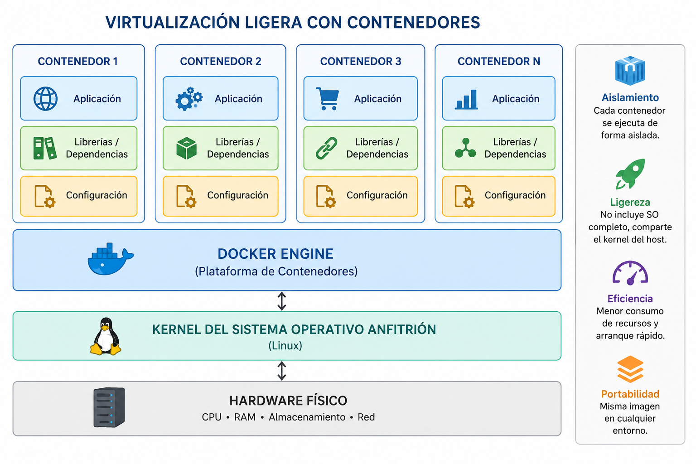

Capítulo 2. Estado del arte
Máquina virtual
Máquina virtual
La virtualización ligera es una tecnología que permite ejecutar múltiples entornos aislados sobre un mismo sistema operativo, compartiendo el mismo núcleo (kernel) del sistema anfitrión. A diferencia de las máquinas virtuales tradicionales, los contenedores no requieren un sistema operativo completo para cada instancia, lo que reduce considerablemente el consumo de recursos y mejora el rendimiento.
Esta tecnología permite aprovechar mejor el hardware disponible, incrementando la eficiencia en el uso de la CPU, la memoria y el almacenamiento, facilitando además el despliegue rápido y reproducible de aplicaciones.

Figura 3. Virtualización ligera mediante contenedores.
Los contenedores constituyen una forma de virtualización ligera que permite ejecutar aplicaciones de forma aislada compartiendo el mismo kernel del sistema operativo anfitrión. Cada contenedor incluye:
| Máquinas virtuales | Contenedores |
|---|---|
| Cada máquina dispone de su propio sistema operativo. | Comparten el kernel del sistema anfitrión. |
| Mayor consumo de CPU y memoria. | Consumo muy reducido de recursos. |
| Tiempo de arranque elevado. | Inicio prácticamente instantáneo. |
| Menor número de instancias por servidor. | Mayor densidad de aplicaciones. |
| Mayor tamaño en disco. | Imágenes ligeras y portables. |

Figura 4. Comparativa entre virtualización tradicional y virtualización mediante contenedores.
En este Proyecto Fin de Grado los contenedores constituyen la unidad básica de despliegue del ecosistema Big Data. Para ello se emplea Docker, una plataforma que facilita la creación, distribución y ejecución de contenedores de forma sencilla y reproducible.
Docker permite empaquetar una aplicación junto con todas sus bibliotecas, dependencias y archivos de configuración, garantizando que pueda ejecutarse de forma idéntica en cualquier equipo.
La virtualización mediante contenedores representa actualmente una de las tecnologías fundamentales para el despliegue de infraestructuras Big Data y aplicaciones basadas en microservicios. Su reducido consumo de recursos, rapidez de ejecución y elevada portabilidad la convierten en la solución idónea para entornos docentes, de investigación y computación en la nube. En este proyecto se utilizará Docker como herramienta principal para desplegar el clúster Hadoop sobre una única máquina física.